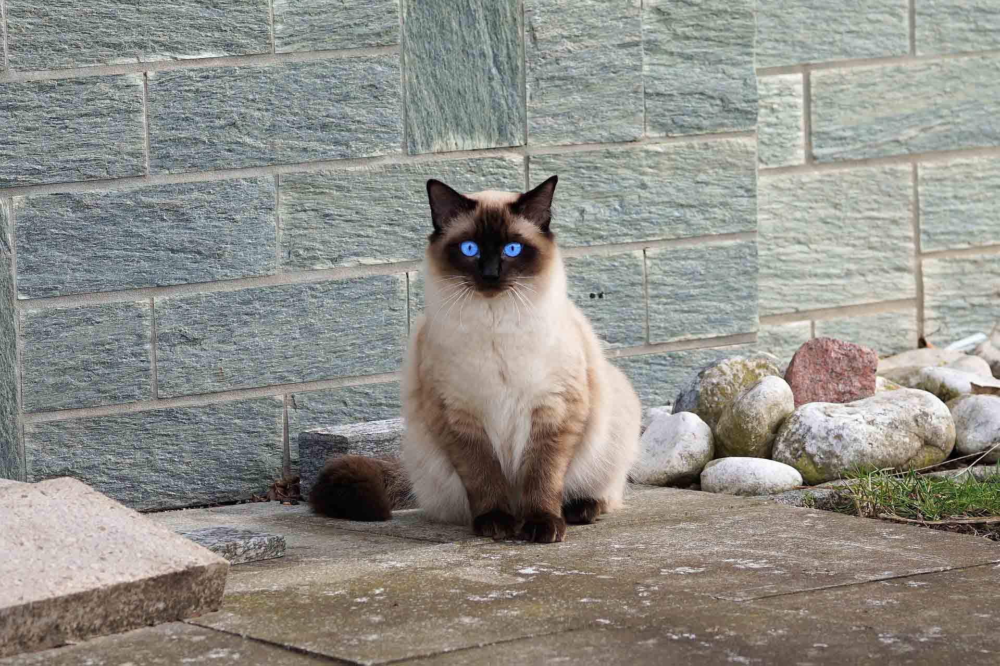
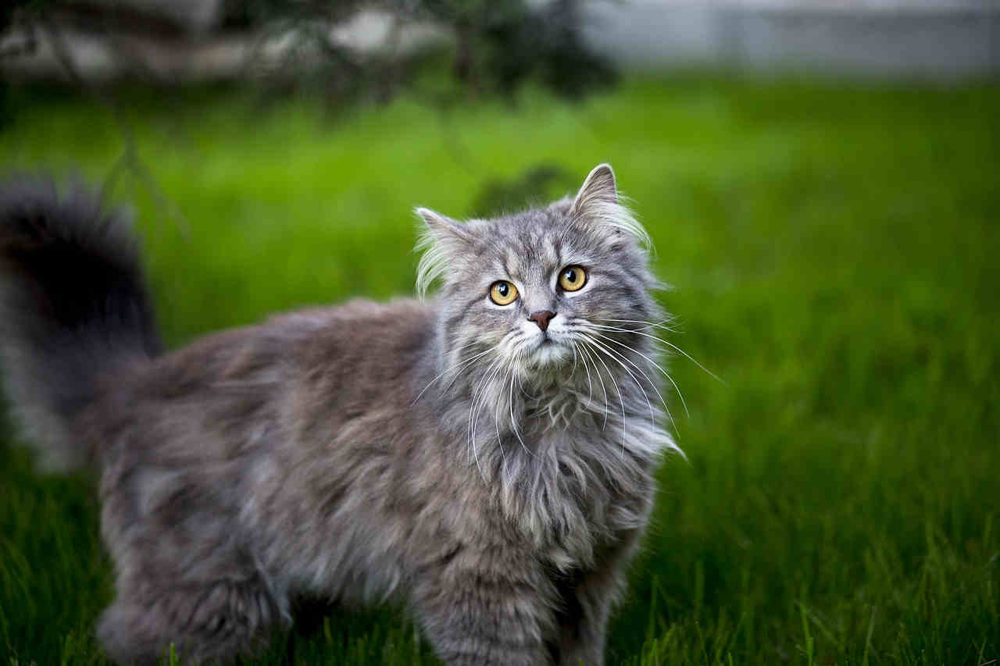
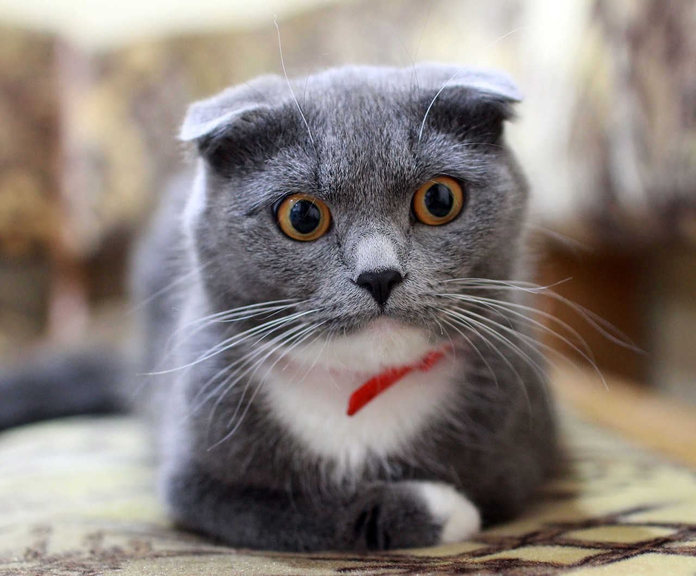
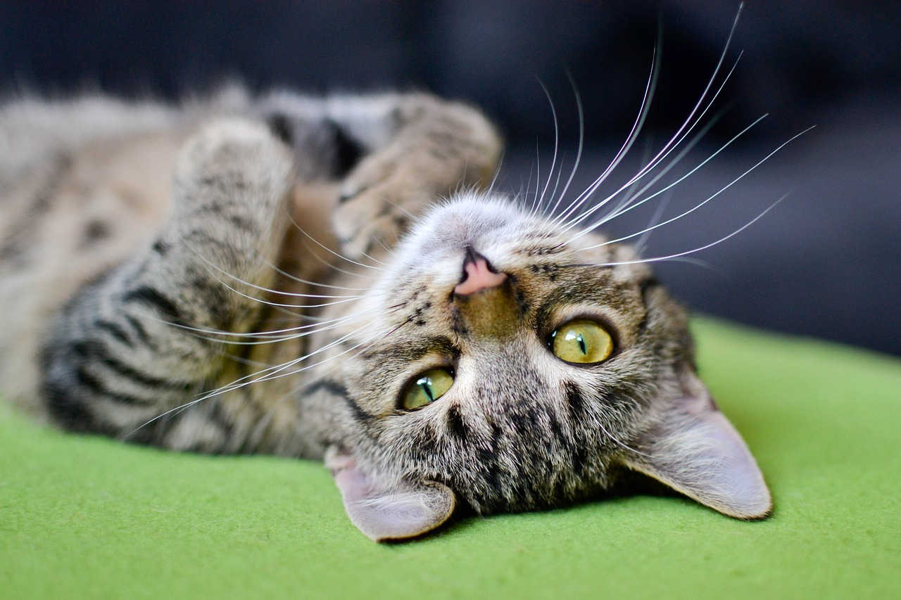

Kotki są różne, niektóre krótkie, inne podłóżne
Jeden dzień na raz – to wystarczy. Nie oglądaj się za siebie i nie martw
się przeszłością, ponieważ jej już nie ma. I nie niepokój się o
przyszłość, bo ta jeszcze nie nadeszła. Żyj teraźniejszością i rób to
tak pięknie, by była warta wspominania. ~ Ida Scott Taylor
Kot sijamski

Kot Syjamski, to iście charakterne i majestatyczne stworzenie. Nie da
się ukryć, że pod królewską wręcz aparycją. Kryję się dusza
prawdziwego urwisa. Są to bardzo energiczne koty uwielbiające zabawę i
mające niemal nieskończone zasoby na figle i kocie psoty, do których
chętnie zaprasza swojego człowieka, bo jak dobrze wiemy "Urwis kocha
najbardziej". Przywiązuje się on do swojego "Właściciela", jednak nie
daje zapomnieć o tym, że to on pociąga za sznurki. Często będzie wręcz
zmuszał swoimi wyrafinowanymi technikami manipulacyjnymi do zabawy.
Warunkiem przyjaźni z tym cudownym kotem, jest poświęcenie dużej
ilości czasu, na igraszki z pupilem. Jednak on odwdzięczy się nam
miłością i przywiązaniem.
Maine coon

Maine coon to taka, ogromna kulka puchu do przytualnia, wystarczy na
niego spojżeć, i już ma się go ochotę wyściskać. Jest to kot który
często będzie manifestował swoją władzę w stadzie, dlateg warto
tresować go już od najmłodszego. Wymaga on od nas poświęcenia dużej
ilości czasu na wspólne zabawy. Nie jest on jednak nachalny posiada
raczej stonowany i dostojny charakter, więc nie będzie się domagał
pieszczot. Mimo że jest on kotem spokojnym i nieagresywnym, nie jest
on dobrym pomysłem na kotka dla małego dziecka. Taki arystokrata jak
mein coon, nie pozwoli sobie na ciągnięcie za ogon czy inne niezbyt
przyjemne "pieszczoty".
Kot brytyjski

Ta (zazwyczaj) szara kulka puchu, posiada bardzo silny charakter. Nie
jest on natrętny - zachowuje wręcz pewien dystans i powściągliwość w
kontaktach z domownikami. Potrzebuje naszej bliskości, jenakże nie
należy z nią przesadzać. Wśród domowników wybiera jedną osobę którą
będzie dażył szczególną miłością. Przede wszystkim jest to kot
przyjacielski który jest świetnym kompanem i towarzyszem dla dzieci. Z
jego pyszczka bije równierz odwaga która również charakteryzuje tego
kota.
Dachowiec

Dachowcu mój szarobury, dachowcu mój czarnolicy, Tyś szybki jak
błyskawica tyś niewidzialny niczym duch. Dachowcu bądź pozdrowiony i
twe zacne kocie ruchy, Piszę o tobie poezję, wiersze o tobie klecę, To
zacna kocia poezja, która serce buduje człowiecze, Dachowiec to
zwierze piękne symbol wolności i hart ducha Dachowiec to mój symbol
piękna, to kocie ruchy!